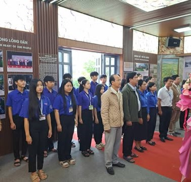
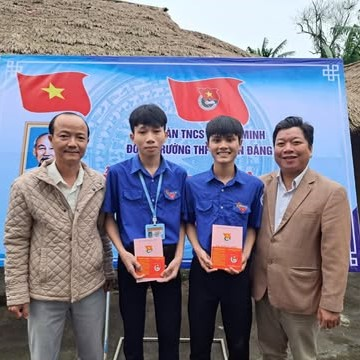

Ngày 26/3/1931 đánh dấu sự ra đời của Đoàn Thanh niên Cộng sản Hồ Chí Minh – tổ chức chính trị - xã hội của thanh niên Việt Nam do Đảng Cộng sản Việt Nam và Chủ tịch Hồ Chí Minh sáng lập, lãnh đạo và rèn luyện. Trải qua hơn 90 năm xây dựng và trưởng thành, Đoàn đã không ngừng lớn mạnh, trở thành lực lượng nòng cốt, xung kích trong mọi phong trào cách mạng.
Hưởng ứng tinh thần ngày 26/3, tập thể lớp 12A4 luôn tích cực tham gia các hoạt động phong trào như: văn nghệ, thể thao, hoạt động tình nguyện, vệ sinh môi trường, giúp đỡ bạn bè trong học tập. Những hoạt động ấy không chỉ giúp chúng em rèn luyện kỹ năng mà còn nuôi dưỡng tinh thần đoàn kết, trách nhiệm và yêu thương.
Ngày 26/3 nhắc nhở mỗi chúng ta rằng tuổi trẻ không chỉ là quãng thời gian đẹp nhất của cuộc đời mà còn là khoảng thời gian ý nghĩa nhất để hành động và cống hiến. Tuổi trẻ không sợ khó khăn, không ngại thử thách, bởi chính những trải nghiệm ấy sẽ giúp chúng ta trưởng thành hơn mỗi ngày.
Là đoàn viên thanh niên, chúng em hiểu rằng trách nhiệm của mình không chỉ dừng lại ở việc học tập tốt mà còn phải rèn luyện đạo đức, kỹ năng sống, tinh thần kỷ luật và ý thức vì cộng đồng. Mỗi việc làm nhỏ hôm nay sẽ góp phần tạo nên những thay đổi lớn cho tương lai.
Hãy sống hết mình với đam mê, dám ước mơ và dám thực hiện ước mơ. Tuổi trẻ 12A4 quyết tâm học tập chăm chỉ, đoàn kết và sáng tạo, để khi nhìn lại, chúng ta có thể tự hào vì đã sống một thanh xuân đầy ý nghĩa.


Nhóm 1 - Lớp 12A4
Email: hothikimphuong1612@gmail.com
Ngày cập nhật cuối
Trang web có sử dụng hình ảnh từ Internet